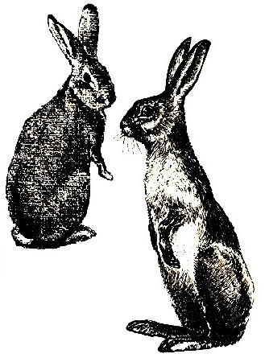

SEXUALITE
“Le meilleur moment de l’amour c’est quand on monte l’escalier." Georges Clémenceau
La sexualité fait partie intégrante de la santé. On peut la voir comme une communication sensorielle. Mais au lieu d'avoir un émetteur et un récepteur, principe même de la communication, il y a deux récepteurs, soi et l'autre. C'est comme si vous envoyez un mail à un(e) ami(e) et vous vous mettez en copie, le plaisir passe par l'autre et nous revient. Et il est à considérér que la sexualité est également plurielle, singulière et non normative. Elle est autant individuelle (pratique masturbatoire), qu'en couple (ou plus). La sexualité inclut l'imaginaire, omniprésent sous forme de fantasme qui se concrétise en désir. C'est ce désir qui va passer à l'acte par le biais du corps, par les sens, les zones érogènes.
Parfois cette sexualité se freine, se bloque. Il y a moins ou plus de libido, de désir. Des "pannes" peuvent apparaitre comme une impuissance, une anéjaculation, de la précocité, de la frigidité, du vaginisme, des douleurs, de l'anorgasmie, etc. Les raisons sont variées et il ne sera présenté ici que l'aspect psychogène comme :
Si c'est souvent pas assez, parfois c'est trop. Une sexualité exacerbéee peut également être le symptôme de pathologies psychiatriques comme on peut retrouver dans certaines addictions comportementales, des troubles de l'humeur ou des pathologies neurologiques comme des traumatismes craniens ou certaines affections cérébrales. Si les comportements sexuels excessifs et incontrôlés étaient auparavant associés à ce que l’on appelait le satyriasis ou le donjuanisme chez l’homme et la nymphomanie chez la femme, ils s’intègrent aujourd’hui dans le trouble sexualité addictive, encore appelé addiction sexuelle, dès lors qu’ils engendrent un retentissement significatif sur le fonctionnement et engendrant une souffrance psychologique.
Apparu dans le domaine médical il y a une vingtaine d'années pour qualifier une pathologie liée à l'excès de sexe, le terme d'addiction sexuelle est aujourd'hui employé à tort et à travers pour désigner les personnes ayant un appétit sexuel supérieur à la norme. Il faut pourtant être vigilant quant à son utilisation, l'addiction faisant écho à une maladie non à des comportements qui ne correspondent pas à ceux de la majorité. Une activité sexuelle riche, tant dans sa fréquence et ses pratiques que dans la diversité de ses fantasmes, n'est pas forcément signe de déviance. Pour éviter les amalgames il convient donc de parler dans ce cas d'hypersexualité et non d'addiction sexuelle.
Parfois cette sexualité se freine, se bloque. Il y a moins ou plus de libido, de désir. Des "pannes" peuvent apparaitre comme une impuissance, une anéjaculation, de la précocité, de la frigidité, du vaginisme, des douleurs, de l'anorgasmie, etc. Les raisons sont variées et il ne sera présenté ici que l'aspect psychogène comme :
- des facteurs d'influences négatives de l'environnement social, du couple, de la famille, de l'éducation ou de la culture.
- une recherche identitaire
- un doute sur son genre sexuel
- des conflits intérieurs issus de croyances ou de valeurs
- un déclin de l'humeur ou de l'anxiété majorée
- un manque d'estime ou une souffrance de l'image
- des conséquences d'actes traumatiques ou forcés
- une certaine exigence de soi ou du partenaire
- des expériences sexuelles passées négatives
- un imaginaire érotique pauvre, absent ou culpabilisant
- une éducation sexuelle rigide
- une aversion envers certaines pratiques sexuelles
- un évitement des perceptions positives
Si c'est souvent pas assez, parfois c'est trop. Une sexualité exacerbéee peut également être le symptôme de pathologies psychiatriques comme on peut retrouver dans certaines addictions comportementales, des troubles de l'humeur ou des pathologies neurologiques comme des traumatismes craniens ou certaines affections cérébrales. Si les comportements sexuels excessifs et incontrôlés étaient auparavant associés à ce que l’on appelait le satyriasis ou le donjuanisme chez l’homme et la nymphomanie chez la femme, ils s’intègrent aujourd’hui dans le trouble sexualité addictive, encore appelé addiction sexuelle, dès lors qu’ils engendrent un retentissement significatif sur le fonctionnement et engendrant une souffrance psychologique.
Apparu dans le domaine médical il y a une vingtaine d'années pour qualifier une pathologie liée à l'excès de sexe, le terme d'addiction sexuelle est aujourd'hui employé à tort et à travers pour désigner les personnes ayant un appétit sexuel supérieur à la norme. Il faut pourtant être vigilant quant à son utilisation, l'addiction faisant écho à une maladie non à des comportements qui ne correspondent pas à ceux de la majorité. Une activité sexuelle riche, tant dans sa fréquence et ses pratiques que dans la diversité de ses fantasmes, n'est pas forcément signe de déviance. Pour éviter les amalgames il convient donc de parler dans ce cas d'hypersexualité et non d'addiction sexuelle.

L'hypersexualité pourrait se définir comme une activité sexuelle soutenue source de plaisir et d'épanouissement, nécessaire à l'équilibre psychique de la personne. C'est un comportement sain dans le sens où il est adapté à la personnalité de l'individu, à ses envies, à ses besoins. Dans la majorité des cas, il s'agit d'un choix de vie personnel, aucunement source de souffrance. Si certains peuvent ressentir un mal-être vis à vis de leurs conduites sexuelles, c'est souvent parce qu'elles entrent en conflit avec des valeurs morales ou religieuses. Cette détresse ne doit pas être confondue avec celle de l'addict sexuel qui dépasse largement les interrogations relatives à l'éthique personnelle.
Un comportement hypersexuel peut être un choix de mode de vie durable ou bien correspondre à une période particulière de l'existence. Parfois il arrive qu'il soit l'amorce de difficultés à venir et glisse ainsi vers une addiction. D'une démarche volontaire pour le plaisir, au fil des années, on passe à une conduite compulsive, échappant à la volonté, davantage dans le registre du soulagement. Les mécanismes de défenses autrefois adaptées ne suffisent plus pour assurer l'équilibre psychique de la personne et elle va trouver dans le sexe une échappatoire aux conflits majeurs émergents. La recherche au travers l'acte est alors de l'anxiolyse, un moyen de tamponner l'angoisse. La clinique apparait quant à elle très polymorphe. Concernant les comportements sexuels du sujet, on retrouve aux premiers rangs la masturbation compulsive, le visionnage excessive de pornographie, l’usage de cybersexe, la multiplication des partenaires, la recherche de fantaisies sexuelles, les rapports non protégés et le sexe via le téléphone mobile. Une part importante de sujets addicts présentent une paraphillie, entité pathologique distincte de l’addiction sexuelle, avec dans 40% des cas un voyeurisme.
Bien que la recherche de plaisir ou d’excitation sexuelle apparaissent comme le principal moteur à de tels comportements, on retrouve également un désir de fuir la réalité, l’ennui, la perte de contrôle, la recherche d'une quiétude anxieuse ou des rapports sexuels insatisfaisants avec le partenaire habituel. Et cette perte de raison génère des conséquences psychiatriques et somatiques importantes, et s’associent à une altération des fonctionnements familial, social, professionnel, économique voire judiciaire. L’addiction sexuelle s’inscrit souvent au sein d’une polyaddiction avec abus ou dépendance à la nicotine, à l’alcool, aux psychotropes ou à d’autres comportements.
La sexualité est l’exemple type de l’interaction hypnotique. Le désir, l’état amoureux, le plaisir, sont autant de situations où deux sujets, ou parfois un sujet seul, se laissent fasciner par un certain nombre d’informations livrées par les cinq sens, par l’interprétation qu’ils en font, le sens qu’ils leur donnent.
Un traitement par l'hypnose peut avoir une efficacité parfois surprenante. Relancer l'activité fantasmatique ou encore prendre le symptôme comme une métaphore à écouter et à dépasser. Lever des croyances ancrées, nettoyer un conflit ou simplement s'autoriser peuvent être des solutions que l'hypnose Ericksonienne peut apporter.
Un comportement hypersexuel peut être un choix de mode de vie durable ou bien correspondre à une période particulière de l'existence. Parfois il arrive qu'il soit l'amorce de difficultés à venir et glisse ainsi vers une addiction. D'une démarche volontaire pour le plaisir, au fil des années, on passe à une conduite compulsive, échappant à la volonté, davantage dans le registre du soulagement. Les mécanismes de défenses autrefois adaptées ne suffisent plus pour assurer l'équilibre psychique de la personne et elle va trouver dans le sexe une échappatoire aux conflits majeurs émergents. La recherche au travers l'acte est alors de l'anxiolyse, un moyen de tamponner l'angoisse. La clinique apparait quant à elle très polymorphe. Concernant les comportements sexuels du sujet, on retrouve aux premiers rangs la masturbation compulsive, le visionnage excessive de pornographie, l’usage de cybersexe, la multiplication des partenaires, la recherche de fantaisies sexuelles, les rapports non protégés et le sexe via le téléphone mobile. Une part importante de sujets addicts présentent une paraphillie, entité pathologique distincte de l’addiction sexuelle, avec dans 40% des cas un voyeurisme.
Bien que la recherche de plaisir ou d’excitation sexuelle apparaissent comme le principal moteur à de tels comportements, on retrouve également un désir de fuir la réalité, l’ennui, la perte de contrôle, la recherche d'une quiétude anxieuse ou des rapports sexuels insatisfaisants avec le partenaire habituel. Et cette perte de raison génère des conséquences psychiatriques et somatiques importantes, et s’associent à une altération des fonctionnements familial, social, professionnel, économique voire judiciaire. L’addiction sexuelle s’inscrit souvent au sein d’une polyaddiction avec abus ou dépendance à la nicotine, à l’alcool, aux psychotropes ou à d’autres comportements.
La sexualité est l’exemple type de l’interaction hypnotique. Le désir, l’état amoureux, le plaisir, sont autant de situations où deux sujets, ou parfois un sujet seul, se laissent fasciner par un certain nombre d’informations livrées par les cinq sens, par l’interprétation qu’ils en font, le sens qu’ils leur donnent.
Un traitement par l'hypnose peut avoir une efficacité parfois surprenante. Relancer l'activité fantasmatique ou encore prendre le symptôme comme une métaphore à écouter et à dépasser. Lever des croyances ancrées, nettoyer un conflit ou simplement s'autoriser peuvent être des solutions que l'hypnose Ericksonienne peut apporter.
EN RELATION
TRAUMA
DEPENDANCE
COMPORTEMENT
CORPS
PHANTASME
COUPLE
CROYANCE